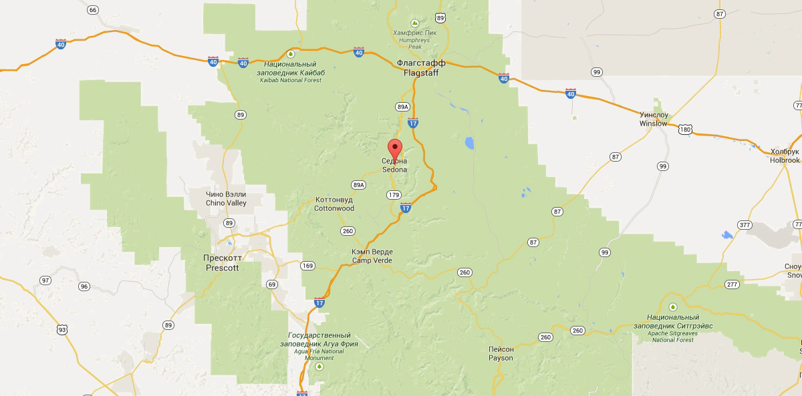

СЕДОНА - НЕБОЛЬШОЙ ГОРОДОК В АРИЗОНЕ, ЗАСЛУЖИВАЮЩИЙ БОЛЬШЕГО!
РАССМОТРИМ 5 ПРИЧИН, ПО КОТОРЫМ СЕДОНА КРУЧЕ, ЧЕМ ГРАНД КАНЬОН!
НАСТОЯЩИ ГОРОДОК
-№1-
СЕДОНА - НЕ АТРАКЦИОН ДЛЯ ТУРИСТОВ, ТАМ ТЕЧЕТ СВОЯ ЖИЗНЬ

 ЖИЛЬЁ
ЖИЛЬЁ
РЕКОМЕНДУЕМ ПОЖИТЬ В НАСТОЯЩЕМ МОТЕЛЕ, ВСЕ КАК В КИНО!
 ЕДА
ЕДА
ВСЕГДА ЗАКАЗЫВАЙТЕ ФИРМЕННЫЙ БУРГЕР. ВЫ НЕ РАЗОЧАРУЕТЕСЬ!
 СУВЕНИРЫ
СУВЕНИРЫ
НЕ ТОЛЬКО КИТАЙСКОГО, НО И МЕСТНОГО ПРОИЗВОДСТВА

ТАМ ЕСТЬ МОСТ ДЬЯВОЛА
-№2-
ДА, ПО НЕМУ МОЖНО ПРОТИ! ЕСЛИ КОНЕЧНО ВЫ ОСМЕЛИТЕСЬ
НЕБОЛЬШАЯ ПЛОЩАДЬ
№3
ВСЕ ДОСТОПРЕМЕЧАТЕЛЬНОСТИ НАХОДЯТСЯ ОЧЕНЬ БЛИЗКО
КРАСИВАЯ ДОРОГА
№4
ЕХАТЬ В СЕДОНУ ИЗ ЛАС-ВЕГАСА СОВСЕМ НЕ СКУЧНО!
МАЛО ТУРИСТОВ
№5
БОЛЬШИНСТВО ЕДЕТ В ГРАНД КАНЬОН И ТОЛПИТСЯ ТАМ
ЗАИНТЕРЕСОВАЛИСЬ?
УКАЖИТЕ ПРЕДПАЛАГАЕМЫЕ ДАТЫ ПОЕЗДКИ, И МЫ ПОКАЖЕМ ВАМ ЛУЧШИЕ ПРЕДЛОЖЕНИЯ ГОСТИНИЦ В СЕДОНЕ
ПОИСК ГОСТИНИЦЫ В СЕДОНЕ
